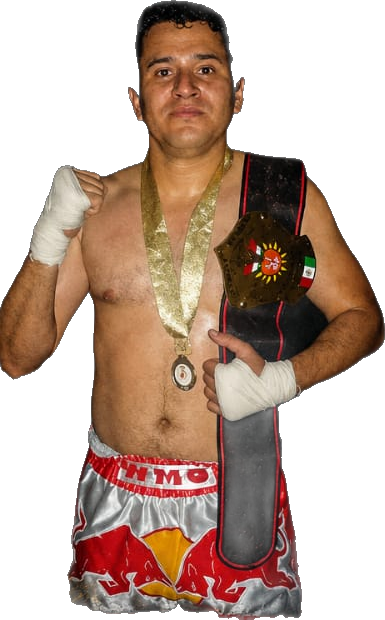
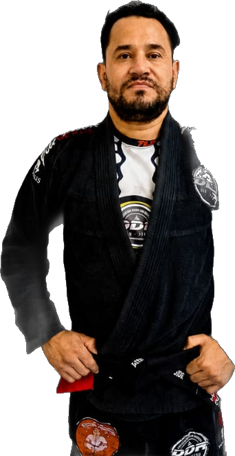

Gimnasio de artes marciales dirigido por el maestro Mike Campos: más de 20 años dando clases, campeón nacional de Muay Thai y cinturón negro de Jiu-Jitsu avalado por la IBJJF.


El Muay Thai, o boxeo tailandés, es el arte marcial y deporte nacional de Tailandia. Se le conoce como «el arte de las ocho extremidades» porque se golpea con puños, codos, rodillas y espinillas, lo que lo convierte en una de las disciplinas de combate de pie más completas.
Además de los golpes, se trabaja el clinch: el agarre cuerpo a cuerpo desde el que se controla al rival y se conectan rodillazos y codazos. Su entrenamiento combina técnica, trabajo en costal y paos, y un acondicionamiento físico muy exigente.
Puños, codos, rodillas y espinillas trabajando en combinación.
Control del rival en la distancia corta.
Resistencia, fuerza y coordinación en cada clase.
Herramientas reales para protegerte de pie.
Derribos, guardias, pasajes y control de posición.
Palanca y posición para enfrentar a rivales más grandes.
Llaves articulares y estrangulaciones aplicadas con control.
Blanco, azul, morado, café y negro.
El Jiu-Jitsu Brasileño (BJJ) nació en Brasil a principios del siglo XX, a partir del judo y el jiu-jitsu japonés que la familia Gracie adaptó y desarrolló. Es un arte marcial de agarre centrado en llevar el combate al suelo y dominar ahí al oponente.
Su principio es que la técnica y la palanca permiten a una persona más pequeña controlar a alguien más grande y fuerte. Se entrena con gi (kimono) y el progreso se reconoce con cinturones. Más que un deporte, es un estilo de vida: no se trata de ser mejor que los demás, sino de ser mejor que ayer.
Con más de 20 años dando clases, el profesor Mike Campos ha formado alumnos de todas las edades y niveles en las dos disciplinas que definen al gimnasio.
Estamos regidos por DDR Internacional, bajo su lema: Dedicación, Disciplina y Respeto. Comprométete contigo mismo, entrena tu mente y respeta a los demás, al arte y a ti mismo.
La International Brazilian Jiu-Jitsu Federation es el organismo internacional que regula las graduaciones y competencias de Jiu-Jitsu Brasileño. El cinturón negro del maestro está registrado ante ella.
Clases lunes, miércoles y viernes a partir de las 5:00 PM. Entrenamientos para todas las edades y niveles.
Dirección: [DIRECCIÓN DEL GIMNASIO]